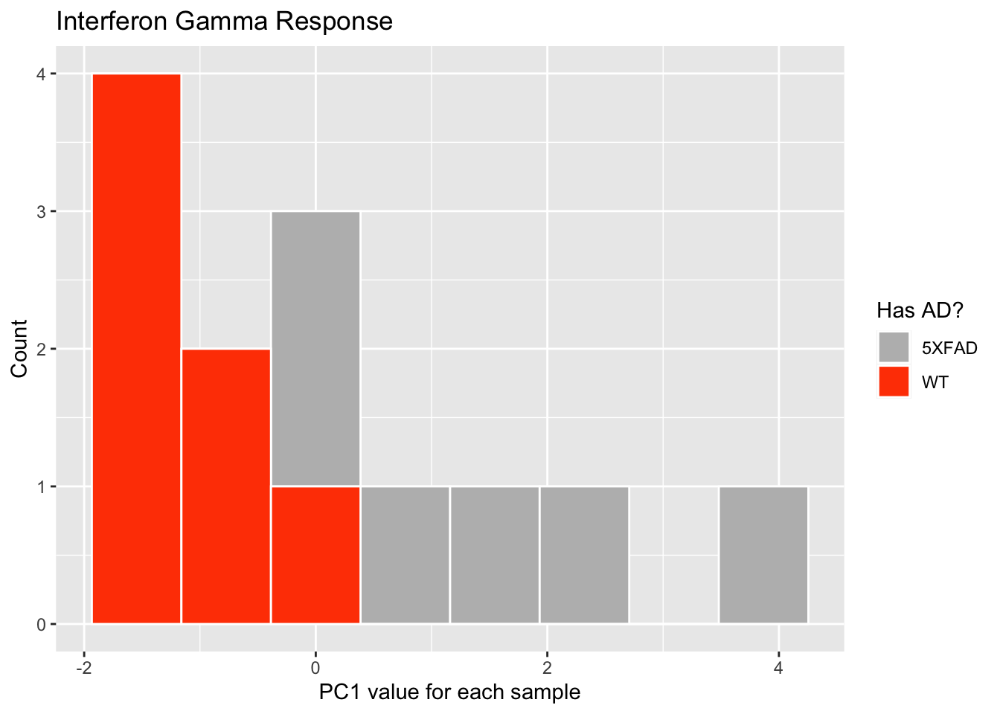
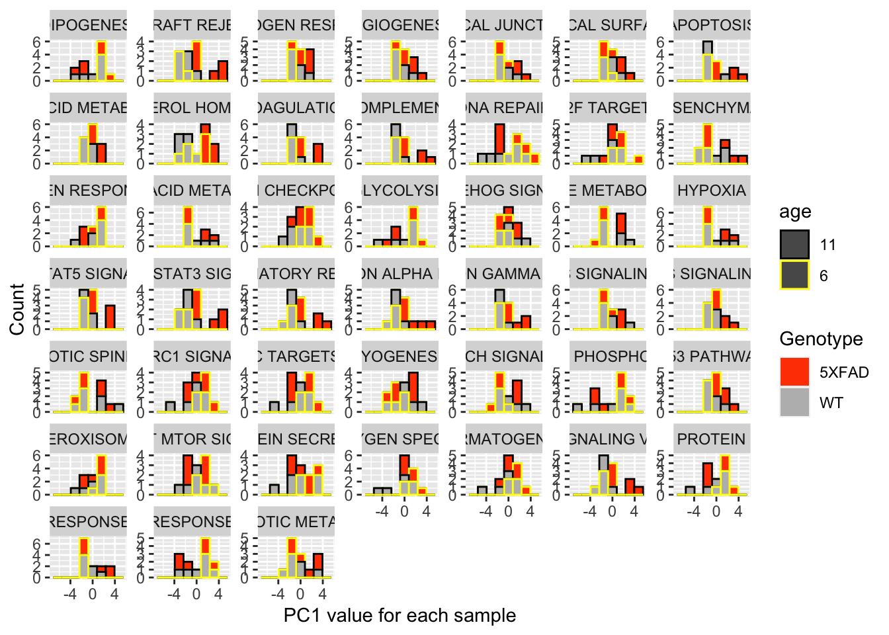

Last updated: 2020-06-01
Checks: 6 1
Knit directory: mousevsfish/
This reproducible R Markdown analysis was created with workflowr (version 1.6.2). The Checks tab describes the reproducibility checks that were applied when the results were created. The Past versions tab lists the development history.
The R Markdown is untracked by Git. To know which version of the R Markdown file created these results, you’ll want to first commit it to the Git repo. If you’re still working on the analysis, you can ignore this warning. When you’re finished, you can run wflow_publish to commit the R Markdown file and build the HTML.
Great job! The global environment was empty. Objects defined in the global environment can affect the analysis in your R Markdown file in unknown ways. For reproduciblity it’s best to always run the code in an empty environment.
The command set.seed(20200504) was run prior to running the code in the R Markdown file. Setting a seed ensures that any results that rely on randomness, e.g. subsampling or permutations, are reproducible.
Great job! Recording the operating system, R version, and package versions is critical for reproducibility.
Nice! There were no cached chunks for this analysis, so you can be confident that you successfully produced the results during this run.
Great job! Using relative paths to the files within your workflowr project makes it easier to run your code on other machines.
Great! You are using Git for version control. Tracking code development and connecting the code version to the results is critical for reproducibility.
The results in this page were generated with repository version d0ddd8e. See the Past versions tab to see a history of the changes made to the R Markdown and HTML files.
Note that you need to be careful to ensure that all relevant files for the analysis have been committed to Git prior to generating the results (you can use wflow_publish or wflow_git_commit). workflowr only checks the R Markdown file, but you know if there are other scripts or data files that it depends on. Below is the status of the Git repository when the results were generated:
Ignored files:
Ignored: .Rhistory
Ignored: .Rproj.user/
Ignored: data/.DS_Store
Ignored: data/datasets/.DS_Store
Ignored: data/datasets/fad/.DS_Store
Ignored: data/datasets/mouse/.DS_Store
Ignored: data/datasets/mouse/kallisto/.DS_Store
Ignored: data/datasets/zebrafish/.DS_Store
Ignored: data/de/
Ignored: data/genesets/.DS_Store
Ignored: data/multiplier/.DS_Store
Untracked files:
Untracked: analysis/fba-test.Rmd
Untracked: analysis/pathwayPCA-mouse.Rmd
Untracked: analysis/pathwayPCA-mouse2.Rmd
Untracked: analysis/testing-pathwayPCA.Rmd
Untracked: data/datasets/fad/GSE39420_RAW/GSM967918_C1.CEL.gz
Untracked: data/datasets/fad/GSE39420_RAW/GSM967919_C2.CEL.gz
Untracked: data/datasets/fad/GSE39420_RAW/GSM967921_C4.CEL.gz
Untracked: data/datasets/fad/GSE39420_RAW/GSM967922_C5.CEL.gz
Untracked: data/datasets/fad/GSE39420_RAW/GSM967923_C6.CEL.gz
Untracked: data/datasets/fad/GSE39420_RAW/GSM967924_C7.CEL.gz
Untracked: data/datasets/fad/GSE39420_RAW/GSM967925_E1.CEL.gz
Untracked: data/datasets/fad/GSE39420_RAW/GSM967926_E2.CEL.gz
Untracked: data/datasets/fad/GSE39420_RAW/GSM967927_E3.CEL.gz
Untracked: data/datasets/fad/GSE39420_RAW/GSM967928_E4.CEL.gz
Untracked: data/datasets/fad/GSE39420_RAW/GSM967929_E5.CEL.gz
Untracked: data/datasets/fad/GSE39420_RAW/GSM967930_E6.CEL.gz
Untracked: data/datasets/fad/GSE39420_RAW/GSM967931_E7.CEL.gz
Untracked: data/datasets/fad/GSE39420_RAW/GSM967932_P1.CEL.gz
Untracked: data/datasets/fad/GSE39420_RAW/GSM967933_P2.CEL.gz
Untracked: data/datasets/fad/GSE39420_RAW/GSM967934_P3.CEL.gz
Untracked: data/datasets/fad/GSE39420_RAW/GSM967935_P4.CEL.gz
Untracked: data/datasets/fad/GSE39420_RAW/GSM967936_P5.CEL.gz
Untracked: data/datasets/fad/GSE39420_RAW/GSM967937_P6.CEL.gz
Untracked: data/datasets/fad/GSE39420_RAW/GSM967938_P7.CEL.gz
Untracked: data/datasets/zebrafish/voomData.rds
Untracked: data/enrichment/
Untracked: data/factor_analysis/
Untracked: ~$notes.docx
Unstaged changes:
Deleted: data/datasets/zebrafish/gseaResults_h.rds
Deleted: data/datasets/zebrafish/gseaResults_h2.rds
Note that any generated files, e.g. HTML, png, CSS, etc., are not included in this status report because it is ok for generated content to have uncommitted changes.
There are no past versions. Publish this analysis with wflow_publish() to start tracking its development.
library(pathwayPCA)
library(edgeR)Loading required package: limmalibrary(here)here() starts at /Users/nhihin/Documents/GitHub/mousevsfishlibrary(ggplot2)
library(magrittr)
library(dplyr)
Attaching package: 'dplyr'The following objects are masked from 'package:stats':
filter, lagThe following objects are masked from 'package:base':
intersect, setdiff, setequal, unionlibrary(tibble)According to the PathwayPCA vignette we need to set up a pathwayCollection object of the gene sets to be tested. Here I will use the Hallmark collection from MSigDB.
The ens_h_mapped.rds object was previously created from the Hallmark collection .gmt file from MSigDB (v.7.0). The entrezgene IDs were converted to Ensembl mouse IDs using homologous genes from BioMart.
hallmarkGenes <- readRDS(here("data", "genesets", "mouse",
"ens_h_mapped.rds"))
hallmarkNames <- names(hallmarkGenes)
hallmarkCol <- CreatePathwayCollection(
sets_ls = hallmarkGenes,
TERMS = hallmarkNames
)exprs <- readRDS(here("data", "datasets", "mouse",
"GSE142633", "dge.rds")) %>%
cpm(log=TRUE)
samples <- readRDS(here("data", "datasets", "mouse",
"GSE142633", "dge.rds"))$samples
samples %<>% rownames_to_column("Sample")
tidyDat <- exprs %>%
as.data.frame %>%
rownames_to_column("gene") %>%
TransposeAssay()
tidyDat[1:5, 1:20] # preview Sample ENSMUSG00000000001 ENSMUSG00000000028 ENSMUSG00000000037
1 FemaleWT6mth_1 4.424424 0.3310469 0.3643809
2 FemaleWT6mth_2 4.446438 1.1371153 0.4685795
3 MaleWT6mth_3 4.602065 0.8561079 -1.5452177
4 MaleWT6mth_4 4.602054 1.0648193 -0.3211812
5 Male5XFAD6mth_1 4.813737 1.2199057 -0.7363653
ENSMUSG00000000049 ENSMUSG00000000056 ENSMUSG00000000058 ENSMUSG00000000078
1 -2.2187958 5.192969 4.016596 4.951050
2 -1.1949578 5.481799 4.304070 5.330625
3 -1.8639714 5.448861 4.018201 4.722022
4 -0.8905988 5.493192 4.497765 5.299552
5 -1.5012779 5.268053 4.554684 5.318679
ENSMUSG00000000085 ENSMUSG00000000088 ENSMUSG00000000093 ENSMUSG00000000094
1 5.732768 7.162896 1.2683977 -0.9925927
2 5.674415 7.216080 0.7173169 -3.8171755
3 5.886234 7.357323 1.5139298 -2.8482035
4 5.522282 7.297271 0.4522577 -2.4815900
5 5.576175 7.243056 -0.1236963 -2.8207938
ENSMUSG00000000120 ENSMUSG00000000125 ENSMUSG00000000126 ENSMUSG00000000127
1 1.98619519 0.874547 3.944278 3.464869
2 0.08330517 1.355445 4.482301 3.455943
3 1.42676912 1.721321 3.716608 3.254969
4 1.56322800 1.270933 4.474569 3.545227
5 0.76121401 1.219906 4.051832 3.667178
ENSMUSG00000000131 ENSMUSG00000000134 ENSMUSG00000000142 ENSMUSG00000000148
1 6.306254 5.380289 4.091563 4.835849
2 6.357348 5.364330 4.218766 4.779969
3 6.441369 5.497393 4.264971 4.930801
4 6.348052 5.460507 4.191269 4.820168
5 6.085080 5.410112 3.593179 4.479087Omics data objectThe samples/expression tidy data and gene sets must now be placed inside an Omics object.
We have to create different Omics objects to test different contrasts. PathwayPCA does not support complex designs like regular gene set testing methods utilising limma objects. However, they do support the following modes:
hasPSEN mutation)Because of this PathwayPCA should be able to give us some complementary information/results.
Has AD
genotype using AES-PCAsamples_genotype <- samples %>%
dplyr::select(Sample, genotype) %>%
dplyr::rename(response = genotype)
omics_genotype <- CreateOmics(
assayData_df = tidyDat,
pathwayCollection_ls = hallmarkCol,
response = samples_genotype,
respType = "categ"
)44 genes have variance < epsilon and will be removed. These gene(s) are: [1] "ENSMUSG00000037096" "ENSMUSG00000051401" "ENSMUSG00000056412"
[4] "ENSMUSG00000060450" "ENSMUSG00000073723" "ENSMUSG00000073834"
[7] "ENSMUSG00000074108" "ENSMUSG00000074467" "ENSMUSG00000078087"
[10] "ENSMUSG00000079101" "ENSMUSG00000081179" "ENSMUSG00000081773"
[13] "ENSMUSG00000081959" "ENSMUSG00000082241" "ENSMUSG00000082933"
[16] "ENSMUSG00000083170" "ENSMUSG00000083596" "ENSMUSG00000089960"
[19] "ENSMUSG00000090145" "ENSMUSG00000093973" "ENSMUSG00000094036"
[22] "ENSMUSG00000094162" "ENSMUSG00000094360" "ENSMUSG00000094706"
[25] "ENSMUSG00000094777" "ENSMUSG00000095231" "ENSMUSG00000095686"
[28] "ENSMUSG00000097653" "ENSMUSG00000100285" "ENSMUSG00000101141"
[31] "ENSMUSG00000101294" "ENSMUSG00000101679" "ENSMUSG00000101847"
[34] "ENSMUSG00000103533" "ENSMUSG00000106392" "ENSMUSG00000109172"
[37] "ENSMUSG00000109173" "ENSMUSG00000109476" "ENSMUSG00000110008"
[40] "ENSMUSG00000112495" "ENSMUSG00000112740" "ENSMUSG00000112781"
[43] "ENSMUSG00000114956" "ENSMUSG00000116963"
====== Creating object of class OmicsCateg =======The input pathway database included 4500 unique features.The input assay dataset included 24790 features.Only pathways with at least 3 or more features included in the assay dataset are
tested (specified by minPathSize parameter). There are 50 pathways which meet
this criterion.Because pathwayPCA is a self-contained test (PMID: 17303618), only features in
both assay data and pathway database are considered for analysis. There are 4282
such features shared by the input assay and pathway database.# Perform enrichment testing using AES-PCA
test_genotype <- AESPCA_pVals(
object = omics_genotype,
numReps = 0,
numPCs = 2,
parallel = TRUE,
numCores = 2,
adjustpValues = TRUE,
adjustment = c("Holm", "BH")
)Part 1: Calculate Pathway AES-PCsInitializing Computing Cluster: DONE
Extracting Pathway PCs in Parallel: DONE
Part 2: Calculate Pathway p-Values
Initializing Computing Cluster: DONE
Extracting Pathway p-Values in Parallel: DONE
Part 3: Adjusting p-Values and Sorting Pathway p-Value Data Frame
DONEtest_genotype$pVals_df # A tibble: 50 x 6
pathways n_tested terms rawp FWER_Holm FDR_BH
* <chr> <int> <chr> <dbl> <dbl> <dbl>
1 HALLMARK_INTERFERON_… 203 HALLMARK_INTERFERON… 1.27e-4 0.00634 1.59e-4
2 HALLMARK_INFLAMMATOR… 201 HALLMARK_INFLAMMATO… 1.27e-4 0.00634 1.59e-4
3 HALLMARK_CHOLESTEROL… 74 HALLMARK_CHOLESTERO… 1.27e-4 0.00634 1.59e-4
4 HALLMARK_COAGULATION 131 HALLMARK_COAGULATION 1.27e-4 0.00634 1.59e-4
5 HALLMARK_IL2_STAT5_S… 202 HALLMARK_IL2_STAT5_… 1.27e-4 0.00634 1.59e-4
6 HALLMARK_REACTIVE_OX… 49 HALLMARK_REACTIVE_O… 1.27e-4 0.00634 1.59e-4
7 HALLMARK_COMPLEMENT 199 HALLMARK_COMPLEMENT 1.27e-4 0.00634 1.59e-4
8 HALLMARK_ADIPOGENESIS 198 HALLMARK_ADIPOGENES… 1.27e-4 0.00634 1.59e-4
9 HALLMARK_APOPTOSIS 159 HALLMARK_APOPTOSIS 1.27e-4 0.00634 1.59e-4
10 HALLMARK_APICAL_JUNC… 205 HALLMARK_APICAL_JUN… 1.27e-4 0.00634 1.59e-4
# … with 40 more rowssigSets <- test_genotype$pVals_df %>%
dplyr::filter(FWER_Holm < 0.05)
sigSets# A tibble: 45 x 6
pathways n_tested terms rawp FWER_Holm FDR_BH
<chr> <int> <chr> <dbl> <dbl> <dbl>
1 HALLMARK_INTERFERON_… 203 HALLMARK_INTERFERON… 1.27e-4 0.00634 1.59e-4
2 HALLMARK_INFLAMMATOR… 201 HALLMARK_INFLAMMATO… 1.27e-4 0.00634 1.59e-4
3 HALLMARK_CHOLESTEROL… 74 HALLMARK_CHOLESTERO… 1.27e-4 0.00634 1.59e-4
4 HALLMARK_COAGULATION 131 HALLMARK_COAGULATION 1.27e-4 0.00634 1.59e-4
5 HALLMARK_IL2_STAT5_S… 202 HALLMARK_IL2_STAT5_… 1.27e-4 0.00634 1.59e-4
6 HALLMARK_REACTIVE_OX… 49 HALLMARK_REACTIVE_O… 1.27e-4 0.00634 1.59e-4
7 HALLMARK_COMPLEMENT 199 HALLMARK_COMPLEMENT 1.27e-4 0.00634 1.59e-4
8 HALLMARK_ADIPOGENESIS 198 HALLMARK_ADIPOGENES… 1.27e-4 0.00634 1.59e-4
9 HALLMARK_APOPTOSIS 159 HALLMARK_APOPTOSIS 1.27e-4 0.00634 1.59e-4
10 HALLMARK_APICAL_JUNC… 205 HALLMARK_APICAL_JUN… 1.27e-4 0.00634 1.59e-4
# … with 35 more rows# Perform enrichment testing using Supervised PCA
# test_AD2 <- SuperPCA_pVals(
# object = omics_AD,
# numPCs = 2,
# parallel = TRUE,
# numCores = 2,
# adjustpValues = TRUE,
# adjustment = c("SidakSS", "BY")
# )
# test_AD2$pVals_dftest_genotype$PCs_ls$HALLMARK_INTERFERON_GAMMA_RESPONSE %>%
set_rownames(attributes(test_genotype$PCs_ls)$sampleIDs) %>%
rownames_to_column("Sample") %>%
left_join(samples, by = "Sample") %>%
ggplot(aes(x = V1, fill = genotype)) +
geom_histogram(bins = 8, colour = "white") +
labs(x = "PC1 value for each sample",
y = "Count",
fill = "Has AD?") +
scale_fill_manual(values = c("#bbbbbb", "orangered")) +
ggtitle("Interferon Gamma Response")
test_genotype$PCs_ls[sigSets$pathways] %>%
lapply(function(x){
x %>% set_rownames(attributes(test_genotype$PCs_ls)$sampleIDs) %>%
rownames_to_column("Sample")
}) %>%
bind_rows(.id = "pathway") %>%
dplyr::mutate(pathway = gsub(x = pathway,
pattern = "_",
replacement = " "),
pathway = gsub(x = pathway,
pattern = "HALLMARK ",
replacement = "")) %>%
left_join(samples, by = "Sample") %>%
ggplot(aes(x = V1, fill = genotype, colour = age)) +
geom_histogram(bins = 8, ) +
labs(x = "PC1 value for each sample",
y = "Count",
fill = "Genotype") +
scale_fill_manual(values = c( "orangered", "#bbbbbb")) +
scale_color_manual(values = c("black", "yellow")) +
facet_wrap(~pathway, scales = "free_y")
sessionInfo()R version 3.6.3 (2020-02-29)
Platform: x86_64-apple-darwin15.6.0 (64-bit)
Running under: macOS Mojave 10.14.6
Matrix products: default
BLAS: /Library/Frameworks/R.framework/Versions/3.6/Resources/lib/libRblas.0.dylib
LAPACK: /Library/Frameworks/R.framework/Versions/3.6/Resources/lib/libRlapack.dylib
locale:
[1] en_AU.UTF-8/en_AU.UTF-8/en_AU.UTF-8/C/en_AU.UTF-8/en_AU.UTF-8
attached base packages:
[1] stats graphics grDevices utils datasets methods base
other attached packages:
[1] tibble_3.0.1 dplyr_0.8.5 magrittr_1.5 ggplot2_3.3.0
[5] here_0.1 edgeR_3.28.1 limma_3.42.2 pathwayPCA_1.2.0
loaded via a namespace (and not attached):
[1] Rcpp_1.0.4 pillar_1.4.4 compiler_3.6.3 later_1.0.0
[5] git2r_0.27.1 workflowr_1.6.2 tools_3.6.3 digest_0.6.25
[9] evaluate_0.14 lifecycle_0.2.0 gtable_0.3.0 lattice_0.20-41
[13] pkgconfig_2.0.3 rlang_0.4.6 Matrix_1.2-18 cli_2.0.2
[17] yaml_2.2.1 parallel_3.6.3 xfun_0.13 withr_2.2.0
[21] stringr_1.4.0 knitr_1.28 vctrs_0.3.0 fs_1.4.1
[25] tidyselect_1.1.0 locfit_1.5-9.4 rprojroot_1.3-2 grid_3.6.3
[29] glue_1.4.1 R6_2.4.1 fansi_0.4.1 survival_3.1-12
[33] rmarkdown_2.1 farver_2.0.3 purrr_0.3.4 ellipsis_0.3.1
[37] backports_1.1.7 scales_1.1.1 promises_1.1.0 lars_1.2
[41] htmltools_0.4.0 splines_3.6.3 assertthat_0.2.1 colorspace_1.4-1
[45] httpuv_1.5.2 labeling_0.3 utf8_1.1.4 stringi_1.4.6
[49] munsell_0.5.0 crayon_1.3.4